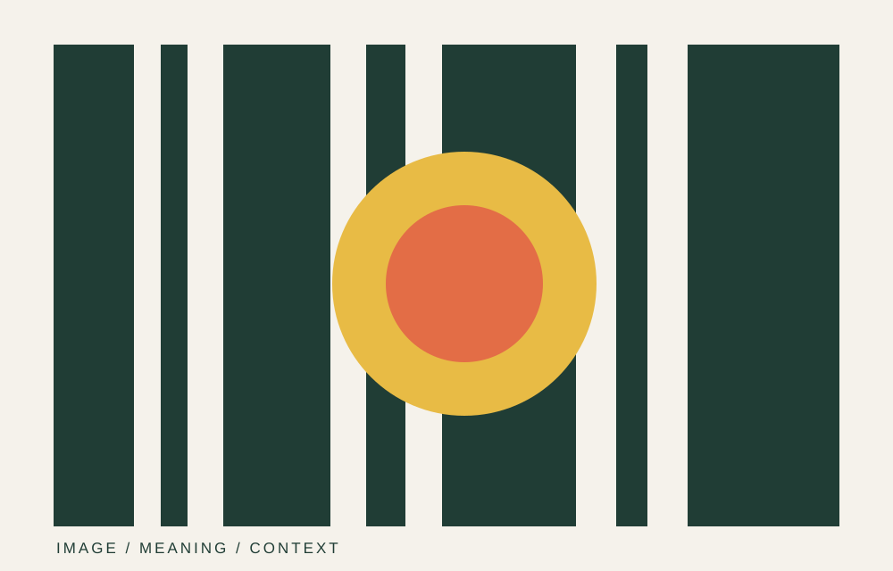

CASE STUDY / 03
Reading the
visual everyday.
A visual analysis connecting design decisions, cultural context and audience interpretation.
Project typeVisual culture
My roleAnalysis, curation, writing
Year2025

Context
Introduce the image, campaign, interface or visual object you analysed. Include the cultural and historical context that matters to your interpretation.
Visual choices
Discuss composition, typography, colour, framing, symbols or other relevant visual details. Link each point to evidence visible in the work.
Meaning & audience
Explain how the visual choices may guide audience interpretation and whether different audiences could read the work differently.
Reflection
What did your analysis reveal? Note any ambiguity, alternative reading or limitation of the evidence.
Project links
Back to overview
Explore all selected work ↗